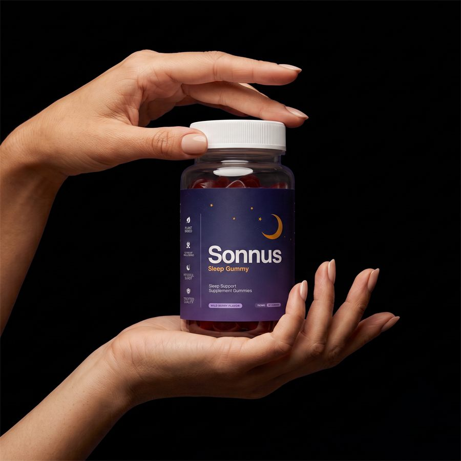

What Is Sonnus And How Does It Work?
Most sleep supplements throw melatonin at the problem and call it a night. Sonnus does something different.
Your brain builds drowsiness on its own through a mechanism researchers call sleep pressure. Every hour you stay awake, that pressure rises — and when it reaches a threshold, your body tips into deep sleep without a fight. The system works beautifully in your twenties. By fifty it is running on fumes.
Chronic stress keeps your nervous system locked in alert mode. Blue light and late-night scrolling convince your brain the day never ended. Years of high-dose melatonin dull the very receptors it was supposed to activate. The battery that once recharged your sleep every night has been draining faster than it fills — and no pill that simply knocks you out is going to recharge it.
That is the gap Sonnus was designed to close. Instead of sedating you into unconsciousness, the formula works on four fronts at once — what the manufacturer calls the 4-Step Reset. Step one rebuilds the raw materials your brain needs to produce its own sleep signals. Step two quiets the racing mind that keeps you staring at the ceiling. Step three releases the physical tension locked in your muscles and nerves. Step four delivers a precise bedtime signal — not a sledgehammer dose, but a whisper that tells your body it is time.
The format matters too. These are gummies, not pills. Wild berry flavor, two before bed, thirty minutes out. No water, no routine overhaul, no bitter aftertaste making you dread the process.
The manufacturer is clear: this is not a knockout pill. It is a biological reset. The results build over days and weeks as the underlying system comes back online — which is also why the 90-day guarantee exists.
Sonnus Ingredients
Ten ingredients. No filler, no proprietary-blend label hiding the amounts. Every compound has a defined job inside the 4-Step Reset.
- Magnesium Bisglycinate — The Sleep-Pressure Primer. Feeds the pathway that converts tryptophan into serotonin and then into melatonin. This is the raw material your brain needs to build sleep pressure on its own schedule — the foundation the rest of the formula stands on.
- L-Theanine — The Racing-Mind Quietener. Promotes calm alpha brain-wave activity without the heavy, switched-off feeling. The racing thoughts at lights-out ease into stillness instead of spiraling.
- Magnesium Glycinate — The Body-Release Mineral. The premium absorbable form, targeting nervous-system and muscle relaxation. Shifts you from tense-and-wired to relaxed-and-ready.
- 5-HTP — The Serotonin Bridge. Supports your body's serotonin production — the direct precursor to nighttime melatonin. From daytime calm to nighttime rest, this is the bridge.
- Vitamin B6 — The Nighttime Converter. The bioactive cofactor that helps convert 5-HTP into serotonin and supports melatonin metabolism. Without it, the raw materials sit unused.
- Precision Melatonin 0.9 mg — The Night Signal. Not the common 5–12 mg megadose that leaves you groggy at sunrise. A precisely calibrated 0.9 mg — enough to signal bedtime, not enough to become the whole solution. A whisper, not a sledgehammer.
- GABA — The Natural Brake Pedal. Your brain's main calming neurotransmitter. Alertness is the accelerator; GABA is the brake. It supports the shift out of alert mode so sleep can begin.
- Apigenin — The Calm Signal. A chamomile compound that supports GABA-related calm pathways. A traditional bedtime botanical, modernized and dosed for effect.
- Vitamin B2 — The Circadian Cofactor. Supports cellular energy production and helps maintain a healthy circadian rhythm — a more consistent internal clock.
- Lemon Balm — The Tension Releaser. Works alongside magnesium glycinate to release the tension and 3 a.m. stress that keep you wired even when your body is exhausted.
Read as a system, the logic is sequential: prime the sleep fuel, quiet the noise, release the tension, signal bedtime. Each ingredient feeds the next.
Sonnus Side Effects
There is nothing in this bottle your body has not encountered before.
The ingredient list reads like a curated shelf of compounds your own biology already uses: two forms of magnesium, an amino acid your gut converts into serotonin, two B vitamins, a neurotransmitter your brain manufactures daily, a chamomile extract, a lemon balm extract, and a trace amount of melatonin smaller than what most drugstore brands put in a single tablet.
No stimulants. No caffeine. No gluten, no sugar, no artificial fillers or dyes. Non-habit-forming — which matters, because the entire premise of the product is that it rebuilds your brain's own sleep system rather than replacing it.
Manufacturing backs that up. Sonnus is made in the USA in an FDA-registered facility. Every batch is third-party tested for purity before it ships.
Across user reports, there is no widespread pattern of adverse effects. The gummy format also avoids the digestive discomfort some people experience with large capsules taken on an empty stomach before bed.
As with any dietary supplement, if you have an existing medical condition or take prescription medication — especially a sleep aid, sedative, antidepressant, or additional melatonin — check with your healthcare professional before starting.
Sonnus Dosage
Two gummies. Thirty minutes before bed. That is the entire routine.
The wild berry flavor makes it the easiest part of your night — which is exactly the point. A reset only works if you actually stick with it, and compliance collapses when the routine feels like work. No pills to swallow, no powders to mix, no bitter tea to steep while you are already half asleep.
Consistency is what this formula rewards. Sleep pressure rebuilds on its own biological timeline, not on demand. Skipping days does not slow the result proportionally — it mostly prevents it. The first few nights bring a quieter mind at lights-out. Around week two the 3 a.m. wake-ups start spacing out. By month one the deep sleep becomes consistent and the morning fog lifts.
The official site offers multi-month packages for that reason: they cover a full reset stretch without a monthly reorder and work out cheaper per bottle. Everything is a one-time purchase — no surprise subscription, no recurring charge to cancel.
Do not exceed the recommended amount. More gummies do not reset the system faster.
Sonnus – Refund Policy
A full 90-day money-back guarantee covers every order.
Take Sonnus for a full two months. If your mind does not quiet down, if you are still snapping awake at 3 a.m., if you do not wake up clearer — if you are not happy for any reason at all — contact support and the money comes back. Even if the bottles are empty.
That guarantee is unusually wide for a sleep supplement. Most competitors offer 30 or 60 days and require sealed bottles. Ninety days with empties accepted says the manufacturer expects the product to speak for itself once you have actually used it long enough.
The full terms are available on the official website.
Sonnus Customer Reviews
 Deborah Michaels
Tulsa, OK
Verified Purchase – 6 Bottles
Deborah Michaels
Tulsa, OK
Verified Purchase – 6 Bottles
“I gave up on sleeping through the night three years ago. Just accepted it. Two gummies before bed and by day ten the 3 a.m. alarm in my head stopped going off. I cannot believe something this simple is what finally worked after everything else I tried.”
 Kenneth Payne
Raleigh, NC
Verified Purchase – 3 Bottles
Kenneth Payne
Raleigh, NC
Verified Purchase – 3 Bottles
“My wife noticed before I did. She said I stopped tossing around at two in the morning and actually stayed still. By week three I was waking up before the alarm feeling like I had slept, not just laid there. The wild berry flavor is a bonus — I actually look forward to it.”
 Lorraine Vega
Scottsdale, AZ
Verified Purchase – 6 Bottles
Lorraine Vega
Scottsdale, AZ
Verified Purchase – 6 Bottles
“I was on 10 mg of melatonin for two years and still woke up groggy every single morning. Switched to Sonnus because the dose is only 0.9 mg and the rest of the formula does the heavy lifting. The fog cleared in about two weeks. I sleep deeper now than I have in a decade and mornings finally feel like mornings again.”
Sonnus – Where To Buy
Before you order, there is a detail that costs people more than they realize.
Sonnus is sold exclusively through the official website. It is not available on Amazon, eBay, or Walmart. Similar-looking bottles do appear on marketplace platforms from time to time — but there is no way to verify whether the formulation is genuine, whether the gummies were stored correctly, or whether you are getting the full 10-ingredient system at all.
And there is a cost nobody counts until it is too late. The 90-day unconditional guarantee attaches to your order — and only official orders carry one. A marketplace purchase leaves no trace in the manufacturer's system. When you need support or a refund, there is no record to find.
Going directly to the source keeps the whole thing intact: the genuine formula, manufactured to the standards described, with the full guarantee and support attached to your name.
Before completing a purchase, confirm you are on the official Sonnus website.
To ensure you're getting the authentic product, most users choose to visit the official website directly.
Is Sonnus A Scam?
No — and the clearest signal is in what the product does not do.
A scam sleep supplement loads 10 mg of melatonin into a cheap capsule, slaps a proprietary-blend label on the bottle, and bets that the knockout effect will feel enough like sleep to prevent a refund request. Sonnus does the opposite. It uses a precise 0.9 mg of melatonin — less than a fifth of the standard drugstore dose — and builds a ten-ingredient system around the biological reset that melatonin alone cannot deliver.
That is an expensive bet to make on a formula that does not work. Ten disclosed ingredients at defined amounts. Manufacturing in an FDA-registered facility in the USA. Third-party purity testing on every batch. A 90-day guarantee that accepts empty bottles.
Where it stops. Chronic insomnia has many causes, and a natural supplement that rebuilds sleep pressure addresses some of them and not others. If you have an underlying condition that requires clinical evaluation, go get one.
But if you have been lying awake at 3 a.m. with a mind that will not shut off, dragging through mornings in a fog, quietly wondering whether this is just what sleep looks like now — then the math is simple. Ninety guaranteed days. If nothing shifts, you ask for the money back and the only cost was finding out.
As with any dietary supplement, consult a healthcare professional before starting if you have an existing condition or take prescription medication.
For those who want to verify product details or check current availability, the official Sonnus website remains the safest and most reliable option.
